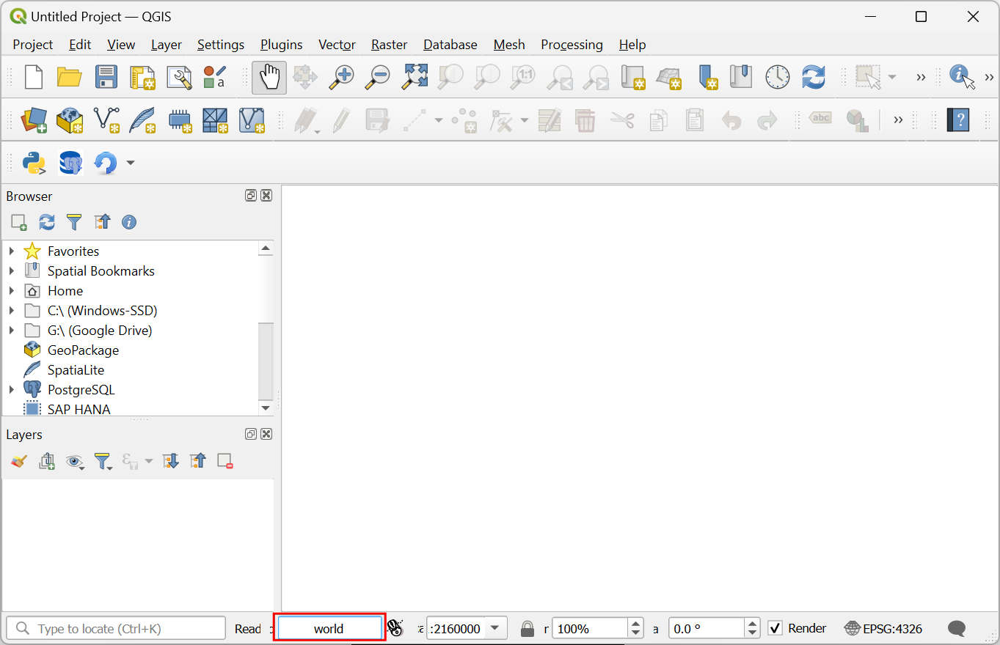
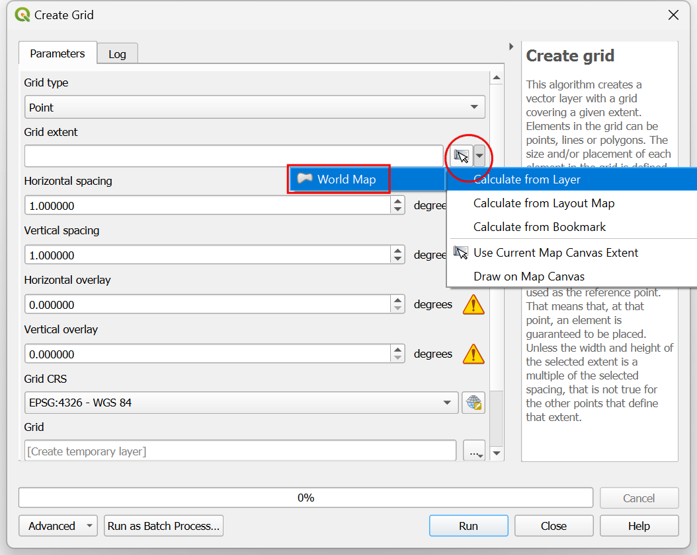
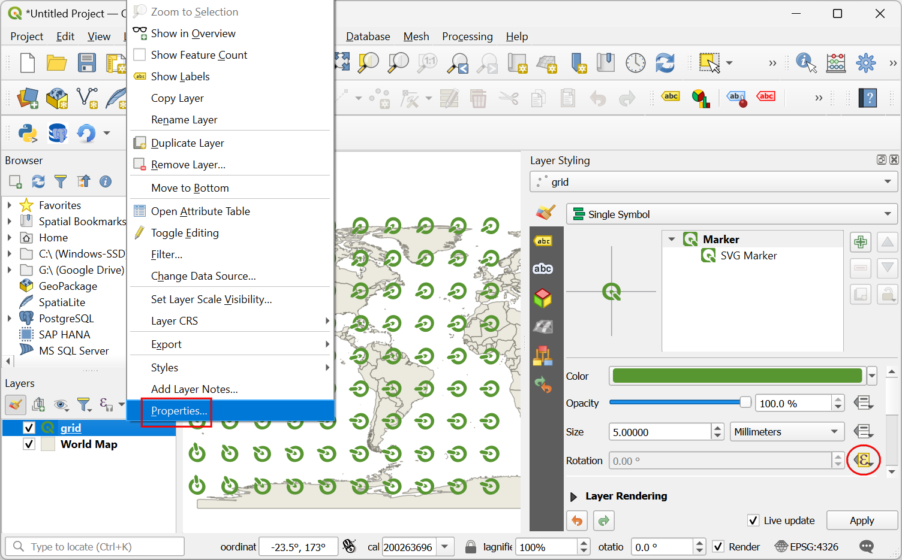

Making Interactive Canvas Maps (QGIS3)¶
This tutorial shows how to make features dynamically update as you move your cursor in the QGIS Canvas. We will implement canvas brushing using expressions to make features respond to the cursor movement.
Overview of the task¶
We will create a grid of QGIS icons and apply a data defined override for icon rotation to make the icons follow the cursor movement.

Procedure¶
1. We will start by creating a grid. To make our grid with global extents, we can load the world map on the canvas. You can type world in the coordinates box at the bottom of the QGIS window and press Enter.
This is one of the several hidden easter eggs in QGIS. You can discover other easter eggs on our YouTube Channel.

A new layer
World Mapwill be added to the QGIS Layers panel. Go to .

Search and locate the algorithm. Double-click to open it.

In the Create grid dialog, click on the dropdown menu .

Next, set the Horizonal spacing and Vertical spacing to
20degrees. Click the...button next to Grid and select Save to File. Browse to a folder on your computer and enter the namegrid.gpkg. Click Run.

A new layer
gridwill be added. Click the Open the layer styling panel button in the Layers panel. Click on the Simple Marker.

In the dropdown menu, select
SVG Markeras the symbol type.

Scroll down to the SVG browser section and select the logos folder. Select the QGIS icon.

Scroll to the Size option and set the size to
5.

Next, locate the Rotation option and click on the data defined override button. Select Edit….

We will add an expression that will dynamically compute the rotation of the icon based on the current cursor position. As our icon is pointing to 135° azimuth, this will be the 0 rotation. As the cursor moves, the expression will compute the azimuth angle between the icon and the cursor location and calculate the angle by which it needs to be rotated to point to the cursor. Enter the following expression and click OK.
degrees(azimuth(@geometry, @canvas_cursor_point)) - 135
The map canvas doesn’t yet respond to the cursor movement because it doesn’t refresh unless you move the map. Let’s make it auto-refresh. Right-click the
gridlayer and select Properties.

Switch to the Rendering tab. Scroll down and check the Refresh layer at interval. Set the interval to a small number such as
0.1(i.e. 100ms) and click OK.

Back in the main window, turn off the
World Maplayer. Now as you move your cursor, all the icons will rotate to point towards your current position.

This fun exercise was designed to help you understand how to use the @canvas_cursor_point variable to make dynamic layers that respond to the mouse movement.
If you want to give feedback or share your experience with this tutorial, please comment below. (requires GitHub account)